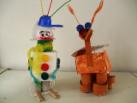

|  |  |
| K I N D E R G E B U R T S T A G E |
Zwei Stunden bieten unsere Künstler, erfahren in der Zusammenarbeit mit Kindern, für Gruppen bis zu zwölf Kindern ihre Themen an: Wiebke Heinrich: Tanzen Teresa Werdier: Töpfern Teresa Werdier: Basteln Wolfgang F. Brack: Foto-Shooting Ellie S. Beyer: Figuren-Filzen Der Grundpreis beträgt 120 € exkl. Materialien |